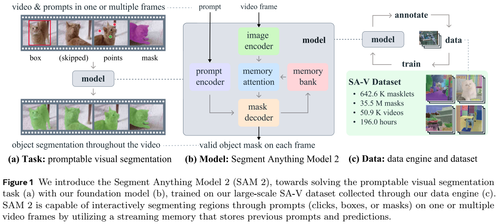
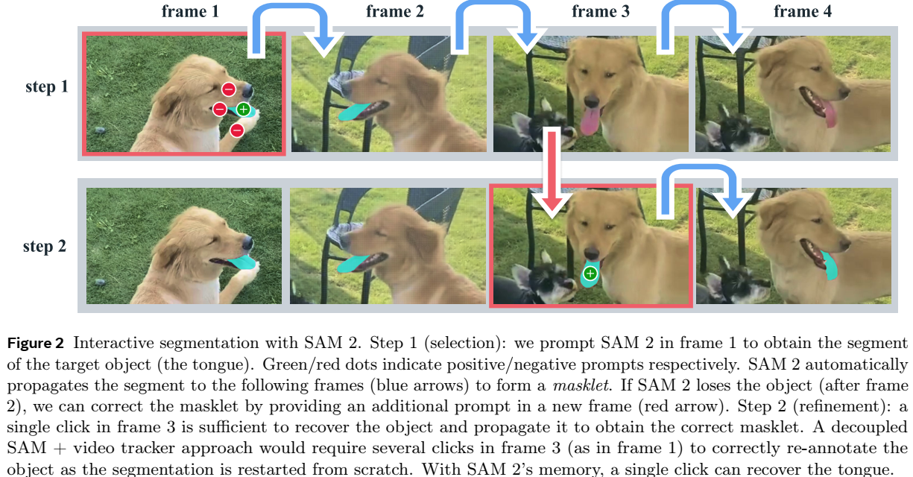
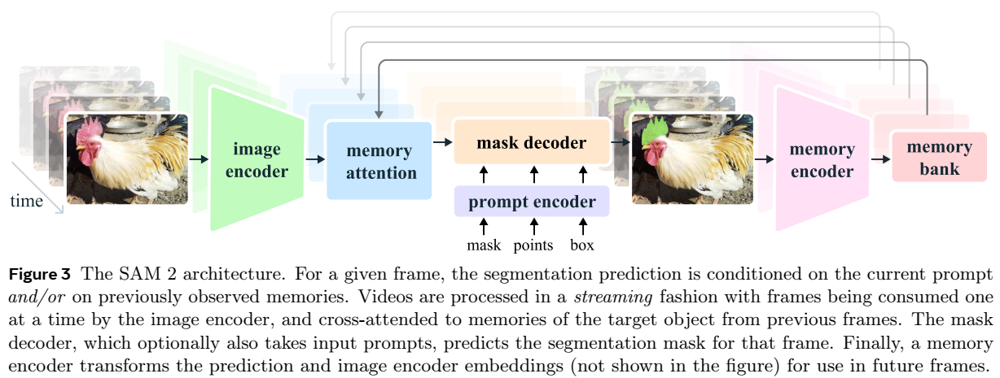
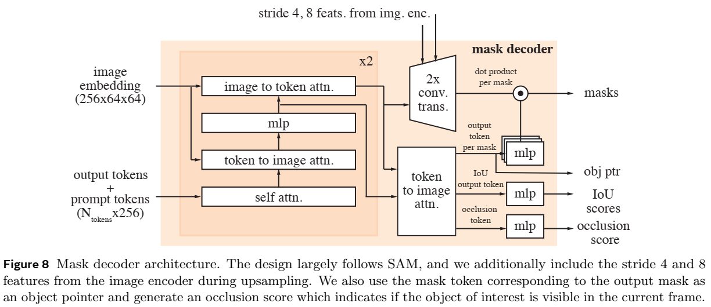

论文阅读二十八：SAM2：分割图像和视频中的任何内容
我们提出分割一切模型SAM2，是解决图像和视频中快速视觉分割的基础模型。我们构建一个数据引擎，通过用户交互改进模型和数据，来收集迄今为止最大规模的视频分割数据集。我们的模型是简单的transformer架构，对于实时视频处理具有流式内存。SAM2在我们数据上训练，提供跨广泛任务范围的强大的性能。在视频分割中，我们观测到比先前方法更好的准确度，使用3倍少的的交互。在图像分割，我们的模型更加准确，且6倍快于SAM模型。我们相信我们的数据、模型和见解将成为视频分割及其相关感知任务的重要里程碑。
演示: https://sam2.metademolab.com
代码: https://github.com/facebookresearch/sam2
网站: https://ai.meta.com/sam2
引言
分割一切（SA）为图像的快速分割（Kirillov等，2023）引入一个基础模型。然而，图像仅是真实世界的静态快照，真实世界中的视觉片段可以表现出复杂的运动，随着多媒体内容的快速增长，现在有很大一部分是以时间维度记录的，特别是在视频数据中。许多重要的应用，在AR/VR、机器人、自动驾驶和视频编辑中，需要图像级别分割之上的时间定位。我们认为一个通用的视觉分割系统应该用可以用于图像和视频。
视频中的分割旨在确定实体的时空范围，展现了超越图像之上的独特挑战。由于运动、变形、遮挡、光照变化和其他因素，实体的外观可能会发生重大变化。由于相机运动、模糊和较低的分辨率，视频的质量通常低于图像。此外，高效处理大量帧是一个关键挑战。虽然SA成功地解决了图像分割问题，但现有的视频分割模型和数据集在提供“分割视频中的任何内容”的可比能力方面存在不足。
我们引入SAM2，一个用于视频和图像分割的统一模型（我们将图像当作单帧视频）。我们的工作包括一个任务、模型和数据集（见图1）。

我们侧重于快速视觉分割（PVS，Promptable Visual Segmentation）任务，将图像分割推广到视频领域。该任务将视频任何帧上的点、框或掩码作为输入，以定义要预测时空掩码（masklet）的感兴趣片段。一旦预测到掩码，就可以通过在额外的帧中提供提示来迭代地改进它。
我们的模型在单一图像和跨视频帧中生成兴趣目标的分割掩码。SAM2配备了一个内存，用于存储有关物体和先前交互的信息，这使得它能够在整个视频中生成掩码预测，并且还能够根据先前观察到的帧中存储的物体的记忆上下文有效地纠正这些预测。我们的流式架构是SAM到视频领域的自然推广，每次处理一帧视频，配备了一个记忆注意力模块来处理目标对象的先前。当应用于图像时，记忆力为空，模型行为像SAM。
我们使用数据引擎（§5）通过在循环中使用我们的模型和注释器来交互式地注释新的和具有挑战性的数据，从而生成训练数据。与大多数现有的视频分割数据集不同，我们的数据引擎不限于特定类别的对象，而是旨在提供训练数据，用于分割任何具有有效边界的对象，包括部分和子部分。与现有的模型辅助方法相比，我们在循环中使用SAM 2的数据引擎在质量相当的情况下速度提高了8.4倍。我们最终的Segment Anything Video（SA-V）数据集（第5.2节）由50.9K个视频中的355M个掩码组成，比任何现有的视频分割数据集多53倍。SA-V 具有挑战性，因为小物体和部分会被遮挡并在整个视频中重新出现。我们的SA-V数据集在地理上是多样化的，SAM2的公平性评估表明，基于感知性别的视频分割性能差异最小，三个感知年龄组之间的差异很小。
我们的实验（§6）表明，SAM 2 在视频分割体验方面带来了重大改变。SAM 2可以产生更好的分割精度，同时使用比现有方法少3倍的交互。此外，在多种评估设置下，SAM 2在已建立的视频对象分割基准中表现优于先前的工作，并且在图像分割基准上比SAM提供了更好的性能，同时速度提高了6倍。如通过许多零样本基准（包括用于视频分割的17个和用于单图像分割的37个）观察到的，SAM 2被显示为在各种视频和图像分布上是有效的。
我们将在宽松的开放许可证下发布我们的工作，包括SA-V数据集（CC 4.0）、SAM 2模型检查点1、训练代码（Apache 2.0）和我们的交互式在线演示代码（Apache 3.0）。
相关工作
图像分割。SA（Kirillov等，2023）引入快速图像分割任务，其目标是输出给定输入提示（如指向兴趣目标的边界框或者点）的有效分割掩码。SAM在SA-1B数据集上训练，允许零样本分割，使其在广泛的应用中被接受。近期工作已经扩展SAM，如，通过引入高质量输出标记来在细粒度掩码上训练（Ke等，2024），或改进SAM的效率（Xiong等，2023；zhang等，2023a；zhao等，2023）。更广泛的，SAM在用于广泛的应用，包括医学影像学（Ma等，2024；Deng等，2023；Mazurowski等，2023；Wu等，2023a），遥感（Chen等，2024；Ren等，2024），运动分割（Xie等，2024），和伪装目标检测（Tang，2023）。
交互式视频目标分割（iVOS）。交互式视频对象分割已成为一项关键任务，可以在用户指导下（通常以涂鸦、点击或边界框的形式）有效地获得视频（掩码）中的对象分割。一些早期的方法（Wang等人，2005；Bai&Sapiro，2007；Fan等人，2015）部署了基于图的优化来指导分割注释过程。最近的方法（Heo等人，2020；Cheng等人，2021b；Delatolas等人，2024）通常采用模块化设计，将用户输入转换为单个帧上的掩码表示，然后将其传播到其他帧。
基于点击的输入更容易收集（Homayounfar 等人，2021 年），可用于交互式视频分割。最近的研究将图像上的 SAM 与基于掩码（Cheng 等人，2023b；Yang 等人，2023；Cheng 等人，2023c）或点（Rajič 等人，2023）的视频跟踪器相结合。然而，这些方法有局限性：跟踪器可能不适用于所有对象，SAM可能在视频帧上表现不佳，并且除了在每个帧中使用SAM重新注释并从那里重新启动跟踪外，没有其他机制来交互式地改进模型的错误。
我们的工作与这些工作有着相似的目标，即交互式地在视频中分割对象，我们构建了一个强大的统一模型，直接接受交互式视频分割的提示，以及一个庞大而多样化的数据集，以实现这一目标。
视频目标分割（VOS）。VOS任务从第一帧中的对象掩码作为输入开始，必须在整个视频中准确跟踪该掩码（Pont Tuset等人，2017）。该任务被称为“半监督VOS”，因为输入掩码可以被视为仅在第一帧中可用的目标的监督信号。由于其在视频编辑或机器人等应用中的相关性，这项任务引起了人们的广泛关注。
早期的基于深度学习的方法通常对第一个视频帧（Caelles等人，2016；Perazzi等人，2016，Yoon等人，2017；Maninis等人，2017，Hu等人，2018a；Bhat等人，2020；Robinson等人，2020）或所有帧（Voigtlaender&Leibe，2017）进行在线微调，以使模型适应目标对象。离线训练的模型实现了更快的推理，这些模型要么仅以第一帧为条件（Hu等人，2018b；Chen等人，2018），要么也整合了前一帧（Oh等人，2018；Yang等人，2018.2020）。这种多重调节已扩展到所有具有RNN（Xu等人，2018a）和transformers（Oh等人，2019；Cheng等人，2021a；Li等人，2022a；Yang等人，2021b，2024；Cheng&Schwing，2022；Yang&Yang，2022；Wang等人，2022；Cheng等，2023a；Goyal等人，2023；Zhang等人，2023b；Wu等人，2033b）的帧。
半监督VOS可以看作是我们的可提示视觉分割（PVS）任务的一个特例，在第一个视频帧中只有一个掩码提示。值得注意的是，在VOS的第一帧中注释所需的高质量对象掩码对于推理来说实际上是具有挑战性和耗时的。
视频分割数据集。已经提出了许多数据集来支持VOS任务。早期的VOS数据集（Prest等人，2012；Li等人，2013；Ochs等人，2014；Fan等人，2015），如DAVIS（Pont Tuset等人，2017；Caelles等人，2019），包括高质量的注释，但它们的大小限制了基于深度学习的方法。YouTube VOS（Xu等人，2018b）是第一个大规模的VOS数据集。随着算法变得更好，基准性能开始饱和，研究人员通过专门关注遮挡（Qi等人，2022；Ding等人，2023）、长视频（Hong等人，20232024）、极端变换（Tokmakov等人，2022）、对象多样性（Wang等人，2021b，2023）或场景多样性（Athar等人，2022年）来增加VOS任务的难度。
我们发现，目前的视频分割数据集缺乏足够的覆盖率来实现“分割视频中的任何内容”的能力。它们的注释通常覆盖整个对象（而不是部分），数据集通常以特定的对象类为中心，如人、车辆和动物。与这些数据集相比，我们发布的SA-V数据集不仅关注整个对象，还广泛涵盖了对象的各个部分，并包含了超过一个数量级的掩码。
任务：快速视觉分割
我们的PVS任务允许在任意视频帧上提供提示到模型。提示可以时正/负点击、框或掩码，用于定义分割目标，或是修正模型预测。为提供交互体验，一旦接收到特定帧的提示，模型应立即响应该帧上的目标的有效分割掩码。接收初始提示后（同一帧或不同帧），模型应传递这些提示来获得跨整个视频的该目标的掩码，在每个视频帧上定位该目标的分割掩码。可以提供额外的提示到模型，在任意帧上，来修正视频中的分割（示例见图2）。任务细节见附录B。

SAM2在PVS任务上被应用作数据收集工具，来构建我们的SA-V数据集。我们通过模拟跨多帧的交互式视频分割场景来评估模型（§6），在传统的半监督VOS设置中，注释仅限于第一帧，并在SA基准上进行图像分割。
模型
SAM2（图3）可视为SAM到视频（和图像）领域的推广，接收单个帧上的点、框和掩码提示，来定义被时空分割的目标的空间范围。空间上，模型行为类似于SAM。快速和轻量掩码解码器接收图像嵌入和提示（若有），并输出该帧的分割掩码。提示可以迭代添加到帧，从而修正掩码。

用于SAM2解码器的帧嵌入不是直接来自图像编码器，而是基于过去预测和提示帧的记忆。提示帧也可能来自相对于当前帧的未来。帧记忆通过内存编码器基于当前预测来创建，放入内存池以用于之后的帧。记忆注意力操作接收来自图像编码器的每帧嵌入，并在记忆池上进行调节，然后掩码解码器吸收它来形成预测。
我们下面描述独立组件和训练，并提供更多细节再附录D。
图像编码器。 对于任意长视频的实时处理，我们采样流式方法，在视频帧可用时消费它们。图像编码器在整个交互中仅运行一次，且其作用是提供表示每帧的无条件的标记（特征嵌入）。我们使用MAE（He等，2022）预训练Hiera(Ryali等，2023；Bolya等，2023)图像编码器，它是层次化的，允许我们在解码时使用多尺度特征。
记忆注意力。记忆注意力的作用是基于过去帧特征和预测，以及任意新提示来调节当前帧特征。我们堆叠Ltransformer模块，第一个接收来自当前帧的图像编码作为输入。各模块执行自注意力，紧接着是存储在记忆池（见下面）中的（提示、未提示）帧和目标点（见下面）的记忆的交叉注意力，接着是一个MLP。我们使用普通注意力操作进行自注意力和交叉注意力，允许我们从高效注意力核（Dao,2023）的近期发展收益。
提示编码器和掩码解码器。我们的提示编码器于SAM中一样，且可以进行提示，通过点击（正或负）、框或掩码定义目标在给定帧上范围。稀疏提示由位置编码表示，并与各种提示类型的学习嵌入相加，而掩码使用卷积嵌入，并于帧嵌入相加。
我们的解码器设计极大地遵循SAM。我们堆叠“两路”transformer模块，更新提示和帧嵌入。如SAM中一样，对于模糊嵌入（如，单击），可能有多个兼容的目标掩码，我们预测多个掩码。这种设计对于确保模型输出有效掩码是重要的。在视频中，模糊嵌入可以跨视频帧扩展，模型预测每个帧上的多个掩码。若没有后续提示解决模糊，模型仅传递对当前帧具有最高预测IoU的掩码。
不同于SAM中给定正提示总是有一个有效目标来切割，在PVS任务中可能在一些帧上没有有效目标存在（如，由于遮挡）。为支持这种新的输出模式，我们添加一个额外的头来预测兴趣目标是否出现在当前帧。另一个新颖之处在于跳过来自我们的分层图像编码器的连接（绕过内存注意）以结合高分辨率嵌入进行掩码解码。
记忆编码器。记忆编码器通过下采样输出掩码来生成记忆，使用卷积模块，并与来自图像编码器的无条件框嵌入进行逐元素相加（为展示在图3），然后通过轻量卷积层来融合信息。
记忆池。记忆池通过维护最多 N 个最近帧的记忆的 FIFO 队列来保留有关视频中目标对象的过去预测的信息，并将来自提示的信息存储在最多 M 个提示帧的 FIFO 队列中。例如，在初始掩码是唯一提示的 VOS 任务中，记忆库池终保留第一帧的记忆以及最多 N 个最近（未提示）帧的记忆。这两组记忆都存储为空间特征图。
除了空间记忆之外，我们还根据每帧的掩码解码器输出标记，将对象指针列表存储为要分割的对象的高级语义信息的轻量级向量。我们的记忆注意力交叉关注空间记忆特征和这些对象指针。
我们将时间位置信息嵌入到N个最近帧的记忆中，使模型能够表示短期对象运动，但不能表示提示帧的运动，因为提示帧的训练信号更稀疏，更难推广到推理设置，在推理设置中，提示帧可能来自与训练期间截然不同的时间范围。
训练。该模型在图像和视频数据上联合训练。与之前的工作类似（Kirillov等人，2023；Sofiiuk等人，2022），我们模拟了模型的交互式提示。我们对8帧的序列进行采样，并随机选择最多2帧进行提示和概率接收纠正点击，这些点击是在训练过程中使用地面真值掩模和模型预测进行采样的。训练任务是顺序（和“交互式”）预测地面真实掩模。对模型的初始提示可以是概率为0.5的地面真值掩码、概率为0.25的从地面真值遮罩中采样的正点击或概率为0.25%的边界框输入。更多细节见§D。
数据
为了开发在视频中“分割任何内容”的能力，我们构建了一个数据引擎来收集庞大而多样化的视频分割数据集。我们采用了一种带有人工注释器的交互式模型在循环设置中。与Kirillov等人（2023）类似，我们不对带注释的面具施加语义约束，而是关注整个对象（例如人）和部分（例如人的帽子）。我们的数据引擎经历了三个阶段，每个阶段都根据提供给注释者的模型辅助级别进行分类。接下来，我们将描述每个数据引擎阶段和我们的SA-V数据集。
结论
我们提出了Segment Anything在视频领域的自然演变，基于三个关键方面：（i）将可提示的分割任务扩展到视频，（ii）使SAM架构在应用于视频时使用内存，以及（iii）用于训练和基准视频分割的不同SA-V数据集。我们认为SAM 2标志着视觉感知的重大进步，将我们的贡献定位为推动进一步研究和应用的里程碑。
SAM2细节
架构
在这里，我们讨论了进一步的架构细节，扩展了第4节中的模型描述。
图像编码器。我们使用特征金字塔网络（Lin等人，2017）分别融合Hiera图像编码器第3和第4阶段的步幅16和32特征，为每帧生成图像嵌入。此外，第1和第2阶段的步幅4和8特征不用于记忆注意力，而是添加到掩模解码器中的上采样层，如图8所示，这有助于产生高分辨率的分割细节。我们遵循Bolya等人（2023）在Hiera图像编码器中使用窗口绝对位置嵌入。在Bolya等人（2023）的研究中，RPB提供了图像编码器中跨窗口的位置信息，我们采用了一种更简单的方法来插值全局位置嵌入，而不是跨窗口。我们不使用任何相对位置编码。我们训练具有不同图像编码器大小（T、S、B+和L）的模型。我们遵循Li等人（2022b）的方法，仅在图像编码器层的一个子集中使用全局注意力（见表12）。
记忆注意力。除了正弦绝对位置嵌入外，我们还在自我注意和交叉注意层中使用二维空间旋转位置嵌入（RoPE）（Su等人，2021；Heo等人，2024）。对象指针标记被排除在RoPE之外，因为它们没有特定的空间对应关系。默认情况下，内存注意力使用L=4层。
提示编码器和掩码解码器。提示编码器设计遵循SAM，接下来我们将讨论掩码解码器设计更改的更多细节。我们使用与输出掩码对应的掩码令牌作为帧的对象指针令牌，该令牌放置在内存库中。如第4节所述，我们还引入了遮挡预测头。这是通过在掩码和IoU输出令牌中包含一个额外的令牌来实现的。将额外的MLP头应用于此新令牌，以产生一个分数，指示感兴趣对象在当前帧中可见的可能性（如图8所示）。在记忆库中，我们还将学习到的遮挡嵌入添加到那些被遮挡预测头预测为遮挡（不可见）的帧的记忆特征中。

SAM引入了在面对图像中被分割对象的模糊性时输出多个有效掩码的能力。例如，当一个人点击自行车的轮胎时，模型可以将这种点击解释为仅指轮胎或整个自行车，并输出多个预测。在视频中，这种模糊性可以跨视频帧扩展。例如，如果在一个帧中只有轮胎可见，则点击轮胎可能只与轮胎有关，或者随着自行车的更多部分在后续帧中可见，这种点击可能是针对整个自行车的。为了处理这种模糊性，SAM 2在视频的每个步骤预测多个掩码。如果进一步的提示不能解决歧义，则模型会选择当前帧具有最高预测IoU的掩码，以便在视频中进一步传播。
存储器编码器和记忆池。我们的内存编码器不使用额外的图像编码器，而是重用Hiera编码器产生的图像嵌入，这些嵌入与预测的掩码信息融合以产生内存特征（如§4所述）。这种设计允许存储器功能受益于图像编码器产生的强表示（特别是当我们将图像编码器缩放到更大的尺寸时）。此外，我们将内存库中的内存特征投影到64维，并将256维的对象指针拆分为4个64维的令牌，以便对内存库进行交叉关注。
处理视频中的多个对象。当应用SAM 2分割同一视频中的多个对象时（例如半监督VOS评估中的多对象跟踪），我们独立地对每个对象进行推理。更具体地说，我们在视频中的所有对象之间共享图像编码器的视觉特征，但为每个对象分别运行所有其他模型组件（如存储体和掩码解码器）。